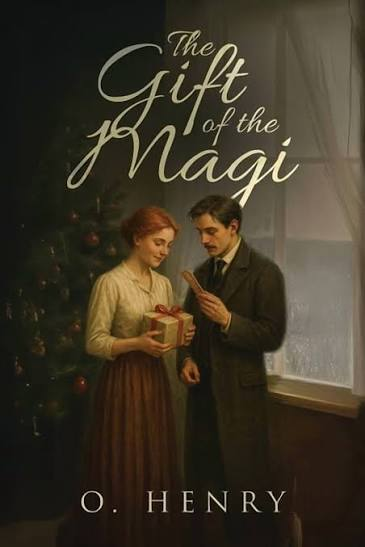

|
 |
|
"The Gift of the Magi" is a short story by American writer O. Henry, first published in 1905. The story tells of a young husband and wife and how they deal with the challenge of buying secret Christmas gifts for each other with only a small amount of money. As a sentimental story with a moral lesson about gift-giving, it has been popular for adaptation, especially for presentation at Christmas time. The plot and its twist ending are well known; the ending is generally considered an example of cosmic irony.[2] The story was allegedly written at Pete's Tavern on Irving Place in New York City.
The story was initially published in The New York Sunday World under the title "Gifts of the Magi" on December 10, 1905. It was first published in book form in the O. Henry collection The Four Million in April 1906.
Della was a young woman who lived with her husband, Jim, in a small and modest apartment. They were poor, and their financial situation was difficult. Even though they did not have much money, they loved each other deeply.
Christmas was approaching, and Della wanted to buy a special Christmas present for Jim. She had been saving money for a long time, but she had managed to save only $1.87. She was disappointed because she felt that this was not enough to buy something worthy of her husband.
Della looked at herself in the mirror and suddenly thought about her beautiful, long hair. Her hair was one of her greatest possessions. She decided to sell it.
She went to a shop that bought women's hair and sold her beautiful hair for $20. With this money, she searched for the perfect gift for Jim.
Jim owned a valuable gold watch, which had belonged to his father and grandfather. Della found a beautiful platinum watch chain that she thought would be perfect for his watch. She bought it and returned home excited.
That evening, Della prepared herself for Jim's arrival. She was worried about how he would react to her short hair. When Jim came home, he looked at Della with surprise. He stood silently for a moment. Della explained that she had sold her hair because she wanted to buy him a Christmas present.
Jim then revealed the reason for his strange expression. He had bought Della a Christmas present too. He gave her a beautiful set of combs, which she had admired for a long time. The combs were meant to decorate her long, beautiful hair.
But Della no longer had her long hair. Della then gave Jim her gift—the beautiful watch chain. Jim smiled and explained that he had sold his watch to buy the combs. So, neither of them could use the gift they had received.
However, the gifts were not truly useless. They represented the great love and sacrifice that each had made for the other. The story ends by comparing Jim and Della to the Magi, the wise men who brought gifts to Jesus. O. Henry suggests that Jim and Della were wise gift-givers because they were willing to sacrifice their most valuable possessions for each other.